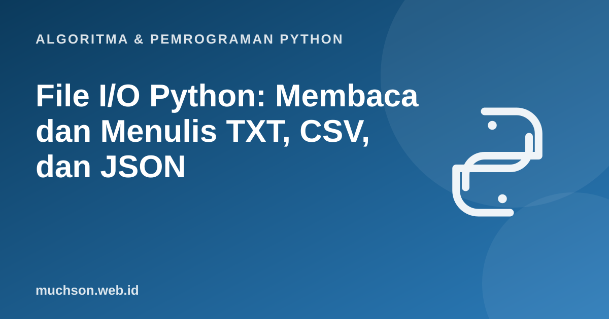

Beranda › Artikel › Algoritma & Pemrograman Python
Algoritma & Pemrograman PythonFile I/O Python: Membaca dan Menulis TXT, CSV, dan JSON
Variabel hilang begitu program selesai. Agar data bertahan, program perlu menyimpannya ke berkas, dan membacanya kembali di lain waktu. Materi ini membahas tiga format yang paling sering ditemui: teks biasa, CSV (tabel), dan JSON (data bersarang), beserta cara membuka berkas dengan aman.
Sebaiknya sudah paham: string, list dan dictionary, perulangan

Tujuan belajar
Setelah membaca dan mencoba materi ini, Anda mampu:
- membuka berkas dengan with dan memilih mode yang tepat
- membaca berkas per baris dan seluruhnya
- menulis dan menambah isi berkas dengan encoding UTF-8
- membaca dan menulis CSV dengan modul csv
- menyimpan dan memuat struktur data dengan JSON
- memakai pathlib untuk jalur berkas
Membuka berkas: with menjamin berkas tertutup
| Mode | Arti | Efek bila berkas sudah ada |
|---|---|---|
| "r" | Baca (bawaan) | Error bila berkas tidak ada |
| "w" | Tulis | Menimpa seluruh isi lama |
| "a" | Tambah di akhir (append) | Isi lama dipertahankan |
| "x" | Buat baru | Error bila sudah ada |
| "r+" | Baca dan tulis | Isi dipertahankan |
with open("catatan.txt", "w", encoding="utf-8") as f:
f.write("Baris pertama\n")
f.write("Baris kedua: é ü 日本\n")
f.writelines(["Baris ketiga\n", "Baris keempat\n"])
with open("catatan.txt", "a", encoding="utf-8") as f:
f.write("Ditambahkan di akhir\n")
with open("catatan.txt", encoding="utf-8") as f:
for nomor, baris in enumerate(f, start=1): # membaca per baris, hemat memori
print(nomor, baris.rstrip())
with open("catatan.txt", encoding="utf-8") as f:
isi = f.read()
print(len(isi), "karakter;", isi.count("\n"), "baris")1 Baris pertama
2 Baris kedua: é ü 日本
3 Baris ketiga
4 Baris keempat
5 Ditambahkan di akhir
82 karakter; 5 baris
Encoding
Selalu sebutkan encoding="utf-8". Tanpa itu, Python memakai encoding bawaan sistem yang bisa berbeda antar komputer (di Windows sering bukan UTF-8), sehingga huruf non-ASCII rusak.
CSV: data tabel
import csv
siswa = [("Ani", 88), ("Budi", 72), ("Citra", 95)]
with open("nilai.csv", "w", newline="", encoding="utf-8") as f:
w = csv.writer(f)
w.writerow(["nama", "nilai"])
w.writerows(siswa)
with open("nilai.csv", newline="", encoding="utf-8") as f:
for baris in csv.DictReader(f): # tiap baris menjadi dict
print(baris["nama"], int(baris["nilai"]) + 5)
total = 0
with open("nilai.csv", newline="", encoding="utf-8") as f:
r = csv.reader(f); next(r) # lewati header
total = sum(int(n) for _, n in r)
print("Total:", total)Ani 93
Budi 77
Citra 100
Total: 255
JSON: data bersarang
import json
data = {"nama": "Ani", "nilai": [88, 90], "aktif": True, "alamat": None}
with open("data.json", "w", encoding="utf-8") as f:
json.dump(data, f, ensure_ascii=False, indent=2)
with open("data.json", encoding="utf-8") as f:
baru = json.load(f)
print(baru["nilai"][1], type(baru["aktif"]), baru["alamat"])
teks = json.dumps(data, ensure_ascii=False) # ke string, bukan berkas
print(teks)
print(json.loads(teks) == data)90 <class 'bool'> None
{"nama": "Ani", "nilai": [88, 90], "aktif": true, "alamat": null}
True
| Python | JSON |
|---|---|
| dict | object |
| list, tuple | array |
| str | string |
| int, float | number |
| True, False | true, false |
| None | null |
pathlib: jalur berkas yang aman lintas sistem
from pathlib import Path
p = Path("laporan") / "2026" / "okt.txt" # operator / menyambung jalur
p.parent.mkdir(parents=True, exist_ok=True)
p.write_text("isi laporan", encoding="utf-8")
print(p.name, p.suffix, p.exists(), p.read_text(encoding="utf-8"))
print([x.name for x in Path("laporan/2026").iterdir()])okt.txt .txt True isi laporan
['okt.txt']
Contoh utuh: menghitung frekuensi kata dari berkas
from collections import Counter
from pathlib import Path
Path("puisi.txt").write_text("Padi menguning padi merunduk\nPadi berisi padi merunduk", encoding="utf-8")
kata = Path("puisi.txt").read_text(encoding="utf-8").lower().split()
for k, n in Counter(kata).most_common(3):
print(f"{k:<10}{n}")padi 4
merunduk 2
menguning 1
Latihan mandiri2. Mengapa
Coba kerjakan dulu sebelum membuka jawaban.
1. Tulis program yang membaca "nilai.csv" dan mencetak nama siswa dengan nilai tertinggi.
import csv
with open("nilai.csv", newline="", encoding="utf-8") as f:
baris = list(csv.DictReader(f))
print(max(baris, key=lambda b: int(b["nilai"]))["nama"])2. Mengapa open("a.txt", "w") pada berkas penting berbahaya?
Berkas langsung dikosongkan. Gunakan "a" untuk menambah, atau tulis ke berkas sementara lalu ganti nama bila aman.
3. Simpan list of dict berisi tiga produk ke JSON, lalu baca kembali dan tampilkan total harga.
json.dump(produk, f), lalu sum(p["harga"] for p in json.load(f)).Ringkasan
- Pakai with open(...) dan tentukan encoding="utf-8".
- Mode: r baca, w tulis (menimpa), a tambah, x buat baru.
- CSV untuk tabel (modul csv), JSON untuk data bersarang (modul json).
- pathlib.Path menyederhanakan penanganan jalur lintas sistem operasi.
Tanya jawab
Mengapa baris yang dibaca ada karakter \n di akhir?
Pembacaan per baris mempertahankan pemisah baris. Gunakan
.rstrip() atau .strip() untuk membuangnya.Bagaimana membaca berkas besar?
Iterasi langsung pada objek berkas (for baris in f) membaca satu baris sekali, sehingga hemat memori.
Apa bedanya json.dump dan json.dumps?
dump menulis ke objek berkas, dumps menghasilkan string. Begitu pula load dan loads.
Referensi
- Dokumentasi Python: Reading and Writing Files (tutorial)
- Dokumentasi Python: csv, CSV File Reading and Writing
- Dokumentasi Python: json, JSON encoder and decoder
- Dokumentasi Python: pathlib, Object-oriented filesystem paths
- Allen B. Downey, Think Python (edisi ke-3), buku teks terbuka